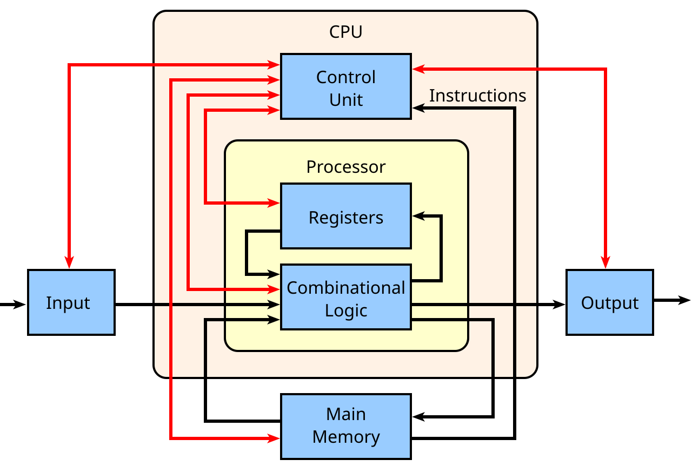
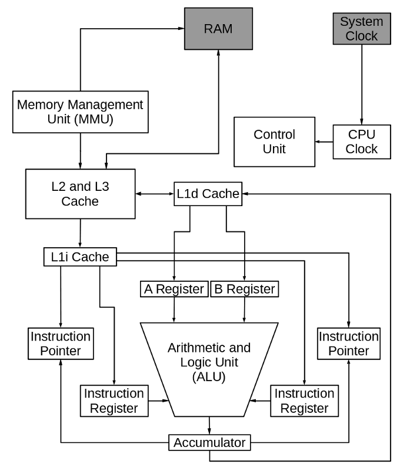

没有主见，没有生活常识，完全以自我为中心从不考虑别人的感受。好高骛远，眼高手低，什么事儿一说就懂一问就蒙，做事没有拼劲儿和韧性。嘴上一直说要努力改变现状，一旦没有人监管就放任自我。找不到生活的意义，像只寄生虫一样只能依靠别人苟活。
CPU构成

一、控制器
- 控制器，又称为控制单元(Control Unit，简称CU)，是计算机的指挥中心，负责管理和协调CPU的工作流程。它的主要功能包括：
- 从内存中获取指令
- 解码指令并执行相应的操作
- 控制数据流向和控制信号的传递
- 处理各种中断和异常情况
二、运算器
- 运算器，又称算术逻辑单元(Arithmetic Logic Unit，简称ALU)，是一个负责算术运算和逻辑运算的模块，它接收来自寄存器的数据，并根据控制单元发送的指令执行相应的操作。
三、寄存器
寄存器是CPU内部的高速存储器，用于暂时存储指令、数据和地址等信息。寄存器的存贮容量有限，读写速度非常快。在计算机体系结构里，寄存器存储在已知时间点所作计算的中间结果，通过快速地访问数据来加速计算机程序的运行。
分类，参考
- 通用寄存器
- 标志寄存器
- 指令寄存器
- 段寄存器
- 控制寄存器
- 调试寄存器
- 描述符寄存器
- 任务寄存器
- MSR寄存器
四、高速缓存器
- 高速缓存是位于CPU和主存之间的高速存储器，用于临时存储频繁访问的数据和指令。它通过缓存预取和缓存命中来提高数据访问速度，从而加快CPU的执行效率。高速缓存通常分为一级缓存(L1 Cache)、二级缓存(L2 Cache)、三级缓存(L3 Cache)等。
五、总线接口
- 总线接口是CPU与外部设备(如内存、输入输出设备等)进行数据传输和通信的通道。它允许CPU与外部设备之间进行数据传输和同步操作，从而实现计算机系统的整体协调。
六、其他辅助元件
寄存器
原子操作实现
原子操作是指不会被线程调度机制打断的操作，这种操作一旦开始就会一直运行到结束，中间不会有任何
context switch。
L1/L2/L3缓存
在早期的计算机，处理器速度和内存速度都很低。随着时代的发展和技术的进步，处理器速度开始迅速提高，导致内存(RAM)无法应对或匹配不断增加的CPU速度，因此诞生了一种新型的超快内存：CPU缓存。

L1缓存
- 位置：最接近CPU核心，通常每个核心独享。
- 容量：最小，通常为32KB到64KB(分为L1指令缓存和L1数据缓存)。
- 速度：最快，访问延迟通常为1-3个时钟周期。
- 作用：存储CPU核心最频繁使用的指令和数据，提供最快的访问速度。
L2缓存
- 位置：位于L1缓存和L3缓存之间，通常每个核心独享或共享。
- 容量：中等，通常为256KB到1MB。
- 速度：比L1慢，访问延迟通常为10-20个时钟周期。
- 作用：作为L1缓存的补充，存储更多的指令和数据，减少对L3缓存的访问。
L3缓存
- 位置：位于L2缓存和主存之间，通常由多个核心共享。
- 容量：最大，通常为几MB到几十MB。
- 速度：比L2慢，访问延迟通常为30-50个时钟周期。
- 作用：作为L2缓存的补充，存储更多的数据，减少对主存的访问。
CPU密集型、IO密集型
CPU密集型，也叫计算密集型，指的是系统的硬盘、内存性能相对CPU要好很多，此时，系统运作CPU读写IO(硬盘/内存)时，IO可以在很短的时间内完成，而CPU还有许多运算要处理，因此CPU负载很高。
CPU密集表示该任务需要大量的运算，而没有阻塞，CPU一直全速运行。CPU密集任务只有在真正的多核CPU上才可能得到加速(通过多线程)，而在单核CPU上，无论你开几个模拟的多线程该任务都不可能得到加速，因为CPU总的运算能力就只有这么多。
CPU使用率较高(例如:计算圆周率、对视频进行高清解码、矩阵运算等情况)的情况下，通常线程数只需要设置为CPU核心数的线程个数就可以了。这一情况多出现在一些业务复杂的计算和逻辑处理过程中比如说现在的一些机器学习和深度学习的模型训练和推理任务，包含了大量的矩阵运算。
IO密集型指的是系统的CPU性能相对硬盘、内存要好很多，此时，系统运作，大部分的状况是CPU在等IO(硬盘/内存)的读写操作，因此CPU负载并不高。
IO密集型的程序一般在达到性能极限时，CPU占用率仍然较低。这可能是因为任务本身需要大量I/O操作，而程序的逻辑做得不是很好，没有充分利用处理器能力。CPU 使用率较低，程序中会存在大量的 I/O 操作占用时间，导致线程空余时间很多，通常就需要开CPU核心数数倍的线程。其计算公式为：
IO密集型核心线程数=CPU核数/(1-阻塞系数)。当线程进行I/O操作 CPU 空闲时，启用其他线程继续使用CPU，以提高CPU的使用率。例如：数据库交互，文件上传下载，网络传输等。
一个计算为主的应用程序(CPU密集型程序)，多线程或多进程跑的时候可以充分利用起所有的CPU核心数，比如说16核的CPU开16个线程的时候，可以同时跑16个线程的运算任务，此时是最大效率。但是如果线程数/进程数远远超出CPU核心数量，反而会使得任务效率下降，因为频繁的切换线程或进程也是要消耗时间的。因此对于CPU密集型的任务来说，线程数/进程数等于CPU数是最好的了。
如果是一个磁盘或网络为主的应用程序(IO密集型程序)，一个线程处在IO等待的时候，另一个线程还可以在CPU里面跑，有时候CPU闲着没事干，所有的线程都在等着IO，这时候他们就是同时的了，而单线程的话，此时还是在一个一个等待的。我们都知道IO的速度比起CPU来是很慢的。此时线程数可以是CPU核心数的数倍（视情况而定）。
基频、主频、睿频、超频
- 基频，是CPU在正常工作状态下未被加速或超频时的运行频率
- 主频就是一颗CPU的运行频率。比如一颗CPU是2.3G，无论是单核还是多核，所有的核心都是工作在2.3G。
- 睿频是Intel的一项加速技术(Turbo Boost)，是指当启动一个运行程序后，频率可以在一范围内根据任务进行自动调整，以保证程序流畅运行的一种技术。
- 超频是为了实现超过额定频率性能，人为调整各种指标(如电压、散热、外频、电源、BIOS等)，从而提高CPU的主频或睿频，进而达到价格更高型号的CPU性能。